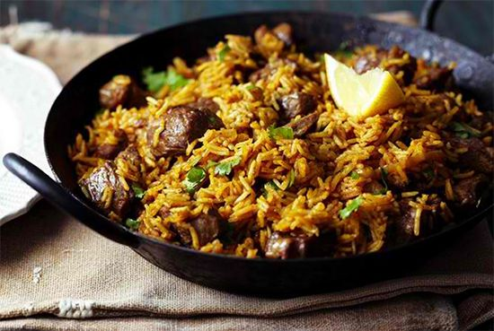

Pilau Recipe

Description
Through the flavors of Swahili cuisine, we bring you a captivating and unique meal - Swahili Pilau. This dish combines the richness of natural spices and the history of the East African coast. Delicately cooked rice is infused with tender meat and leafy vegetables, expertly blended with ingredients such as cardamom, cinnamon, and red bell peppers. Swahili Pilau is more than just a dish; it's an experience of culture and taste, enticing food enthusiasts to learn about and savor this distinctive flavor
Main Ingredients
- 2 cups long-grain Basmati rice (or any fragrant rice)
- 500g meat (chicken, beef, or lamb), cut into bite-sized pieces
- 1 large onion, finely chopped
- 3-4 cloves of garlic, minced
- 1-2 tablespoons cooking oil or ghee
Spices and Seasonings
- 1 teaspoon cumin seeds
- 1 teaspoon whole black peppercorns
- 5-6 whole cloves
- 5-6 green cardamom pods
- 1-2 cinnamon sticks
- 1 teaspoon ground turmeric
- 1 teaspoon ground cumin
- 1 teaspoon ground coriander
- 1 teaspoon paprika or cayenne pepper (adjust to your spice preference)
- Salt to taste
Other Flavorings
- 1 tablespoon ginger paste or minced ginger
- 1-2 tomatoes, chopped
- 1-2 bell peppers (red or green), diced
- Handful of raisins or currants (optional)
- Fresh cilantro or parsley, chopped (for garnish)
Liquid
- 4 cups warm water or chicken/beef broth
Optional
- Fried onions for garnish
- Cashew nuts or peanuts for added crunch and flavor
STEPS
- Rinse the rice thoroughly under cold water until the water runs clear. Drain and set aside.
- In a large pot or pan, heat the cooking oil or ghee over medium heat.
- Add the whole spices: cumin seeds, whole black peppercorns, cloves, green cardamom pods, and cinnamon sticks. Sauté for a minute or until fragrant.
- Add the chopped onions and cook until they turn soft and golden brown.
- Stir in the minced garlic and ginger paste. Sauté for a minute until aromatic.
- Add the meat pieces to the pot. Brown the meat on all sides.
- Mix in the ground spices: turmeric, ground cumin, ground coriander, and paprika or cayenne pepper. Ensure the meat is coated with the spices.
- Add the chopped tomatoes and diced bell peppers. Cook until the tomatoes break down and the peppers soften.
- Pour in the warm water or broth. Add salt to taste. Bring the mixture to a simmer.
- Add the rice to the pot, distributing it evenly among the ingredients. Stir gently.
- If using raisins or currants, sprinkle them over the rice for a touch of sweetness.
- Cover the pot with a tight-fitting lid. Reduce the heat to low and let the pilau simmer for about 20-25 minutes, or until the rice is cooked and the liquid is absorbed.
- Once the rice is cooked, remove the pot from heat and let it sit, covered, for about 10 minutes. This helps the flavors meld and the rice to settle.
- Fluff the rice gently with a fork to separate the grains.
- Serve the Swahili Pilau hot, garnished with chopped cilantro or parsley. Optionally, top with fried onions and nuts for added texture and flavor.
Swahili Pilau is a delightful dish that combines fragrant spices with tender meat and flavorful rice. Enjoy this beloved East African recipe with friends and family!